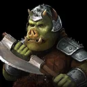
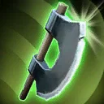
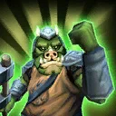
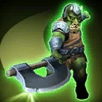

Gamorrean Guard
Aggressive tank that Taunts and Counters with multiple Damage Over Time effects

Aggressive tank that Taunts and Counters with multiple Damage Over Time effects

Deal Physical damage to target enemy and inflict two Damage Over Time effects for 3 turns.

Gamorrean Guard Taunts and gains Retribution for 2 turns . The Gamorrean Guard gains Protection equal to 20% of his Max Health while Taunting.

Dispel buffs, deal Physical damage, and inflict Expose on target enemy for 2 turns.
If the ally in the Leader slot is Hutt Cartel and the target enemy is inflicted with Damage Over Time or Thermal Detonator, remove 20% Turn Meter from them.
At the start of battle, Gamorrean Guard gains 10% Max Health for each other Hutt Cartel ally and a stack of My Kind of Scum. While he is active, enemies have -20% Tenacity.
If the ally in the Leader slot is Jabba the Hutt: While Gamorrean Guard has Defense Up, he gains 50% Critical Avoidance. Whenever Gamorrean Guard loses Taunt, he gains Defense Up for 2 turns and whenever Jabba uses a Special ability, if Gamorrean Guard is Taunting he recovers 20% Health.
If the ally in the Leader slot is Hutt Cartel, whenever another Hutt Cartel ally falls below 70% Health while Gamorrean Guard has Defense Up, he Taunts and gains Protection Up (100%) for 2 turns.
Omicron Boost : While in Territory Battles: Gamorrean Guard has +50% Critical Avoidance, Defense, and Tenacity. Other Hutt Cartel allies have +50% Max Health and Max Protection. The first time each other Hutt Cartel ally falls below 50% Health, they gain Damage Immunity for 1 turn, which can't be copied, dispelled, or prevented. If the ally in the Leader slot is Hutt Cartel and not Gamorrean Guard, whenever they use an ability, Gamorrean Guard assists.